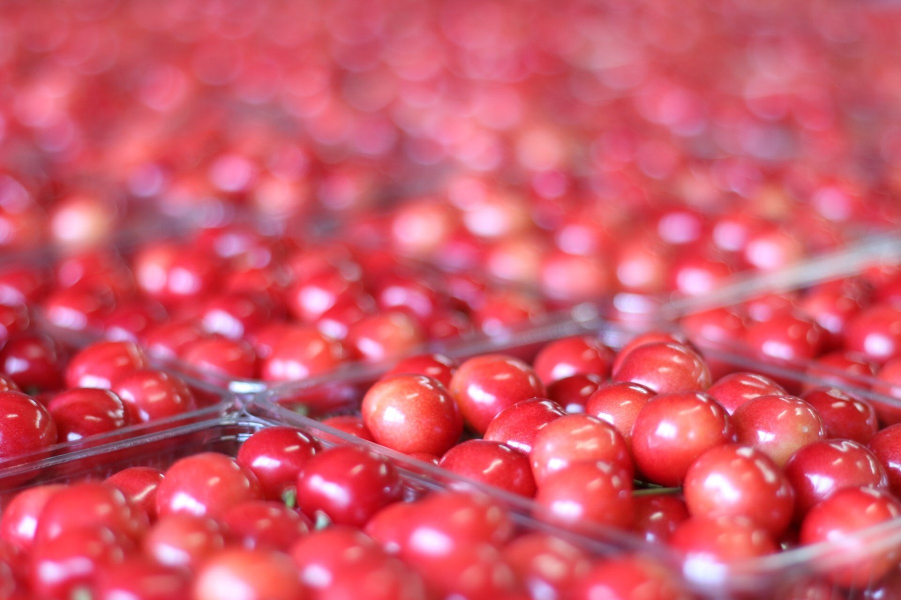
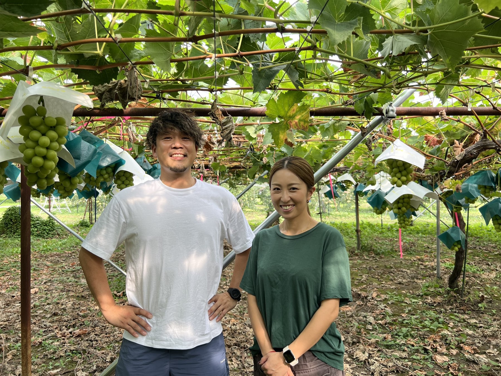
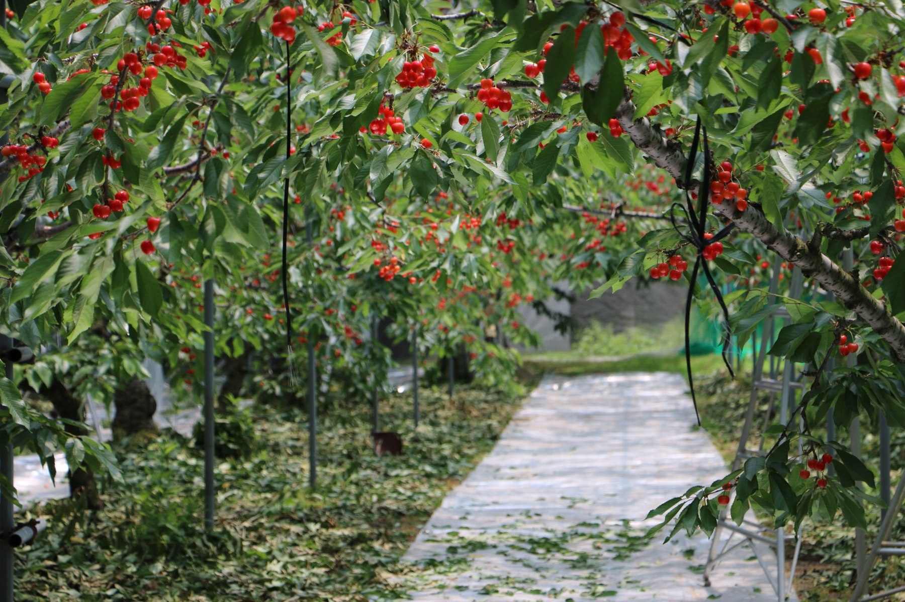
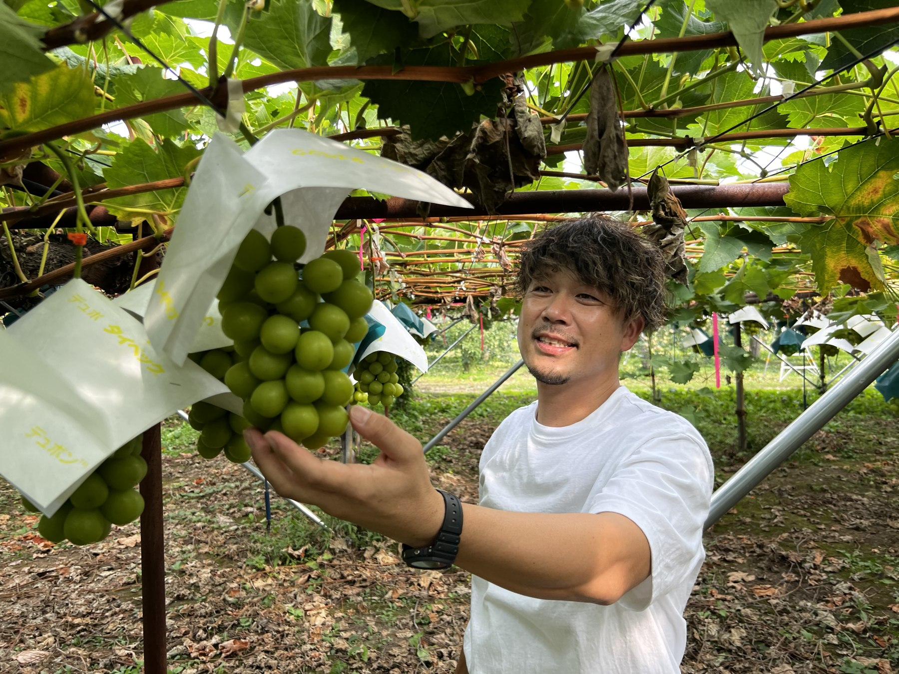

今季終了
山形県天童市から、旬をそのまま。
山形・天童から、手をかけた旬の果物を。さくらんぼ、もも、ぶどう、ラ・フランスを、一つひとつ大切に育てています。

私たちが育てています農園のお話を読む →
果物の販売時期は、天候や生育状況に合わせてお知らせします。
SEASONAL FRUITS

OUR STORY
同じ品種でも、天気や土の状態で育ち方は変わります。木を見て、実に触れ、その年に合った手入れを重ねること。派手ではない日々の仕事が、おいしい果実につながると考えています。
品種ごとの食べ頃と畑の状態を見ながら収穫します。
収穫した果実を、山形県天童市からお届けします。
大切な方へ、季節の便りとして贈れる商品を用意します。
ORDER
商品・数量・お届け先を選び、送料を含む合計を確認してご注文いただけます。
QUESTIONS & ANSWERS
発送時期は各商品・規格のご案内をご確認ください。収穫状況や天候により前後する場合があります。
「予約受付中」と表示された規格は注文できます。発送はその商品の収穫・出荷時期になります。
注文画面でお届け先の都道府県を選ぶと、送料と支払手数料を含む合計をご確認いただけます。
注文画面にカード払いが表示されている場合に選択できます。注文受付後、農園からご案内する決済ページでお支払いください。